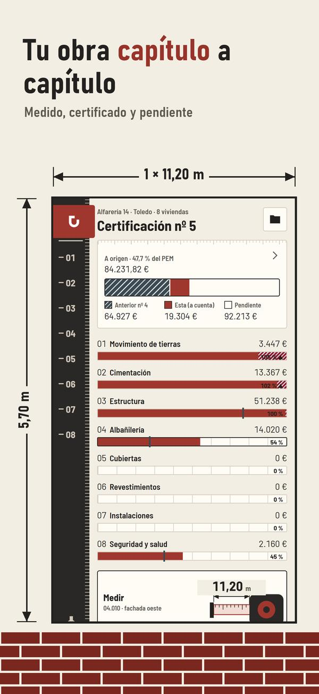
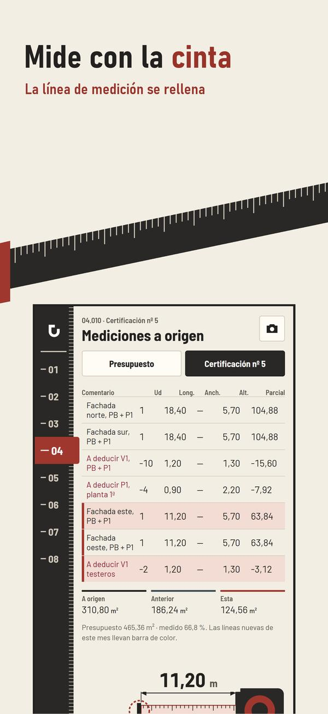
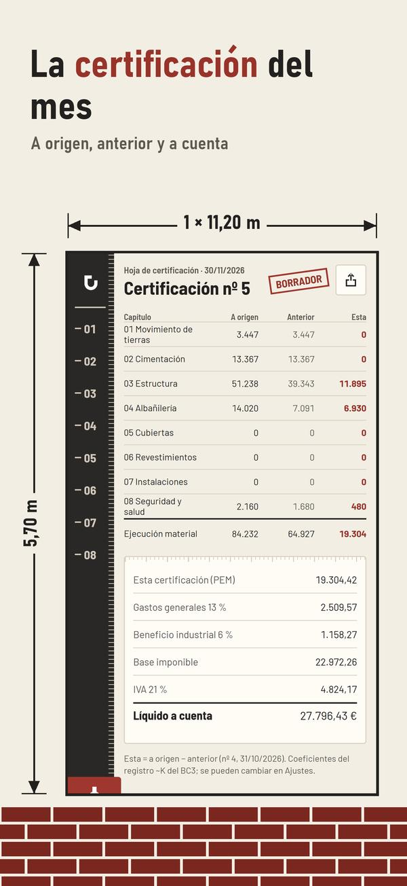

Certobra – Mediciones BC3
Certificaciones en la obra
Certobra lleva tu presupuesto BC3 a la obra. Ábrelo desde Archivos o Mail, recorre capítulos, partidas y descompuestos, y apunta las líneas de medición donde se miden: unidades, largo, ancho y alto, con huecos a deducir. Al final de mes, la certificación sale sola: a origen, anterior y a cuenta, con gastos generales, beneficio industrial e IVA.



- Abre archivos BC3 de tu programa de presupuestos
- Capítulos en una cinta lateral: salta de uno a otro con el pulgar
- Líneas de medición Ud × Long. × Anch. × Alt., con deducciones
- Tira de la cinta y la medida entra en la línea
- Certificación a origen, anterior y a cuenta con GG, BI e IVA
- Medido frente a presupuesto: excesos y defectos por partida
- Croquis con cotas unido a cada línea
- Exporta BC3 de certificación y PDF para la oficina
Pronto en el App Store
Ayuda · Privacidad